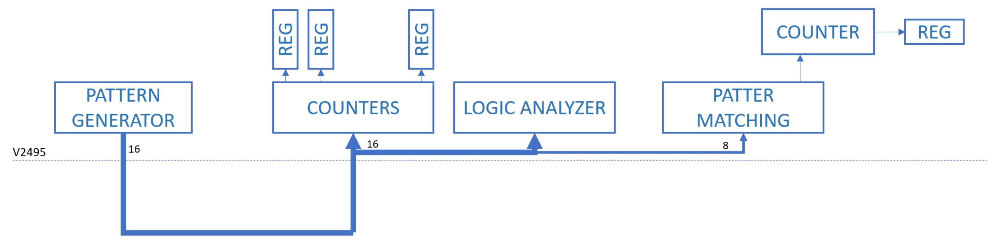
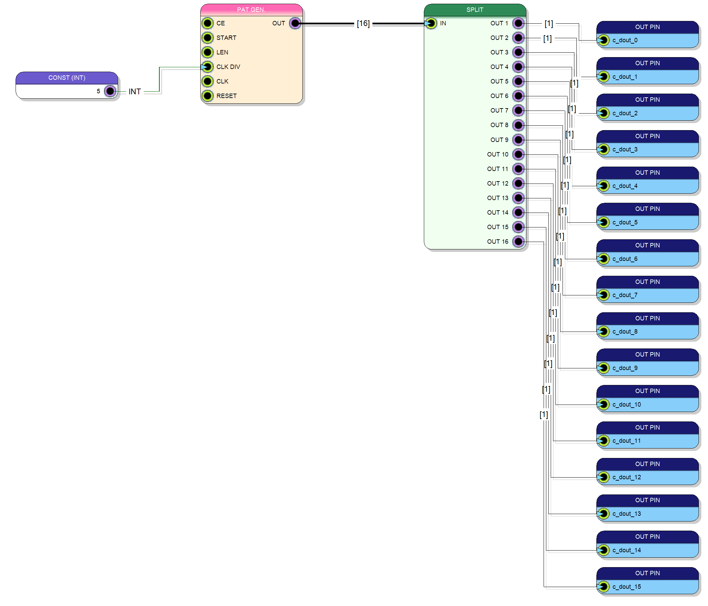
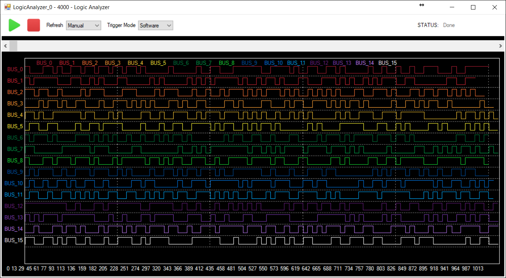
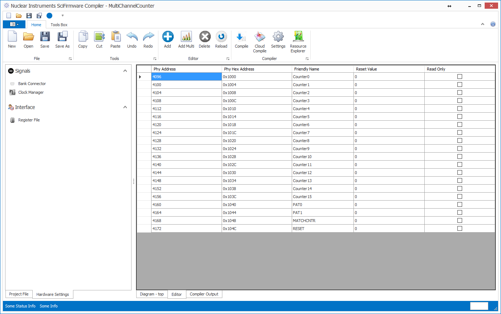
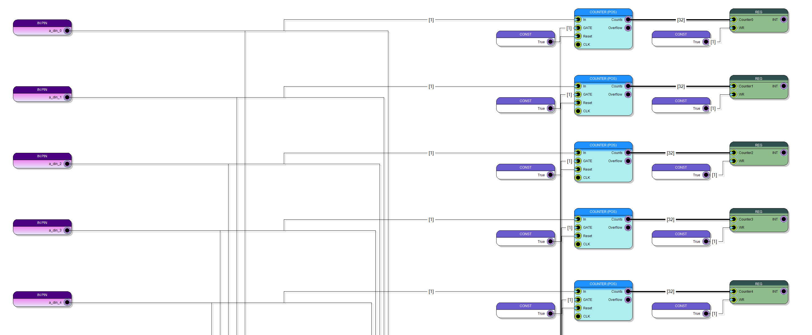
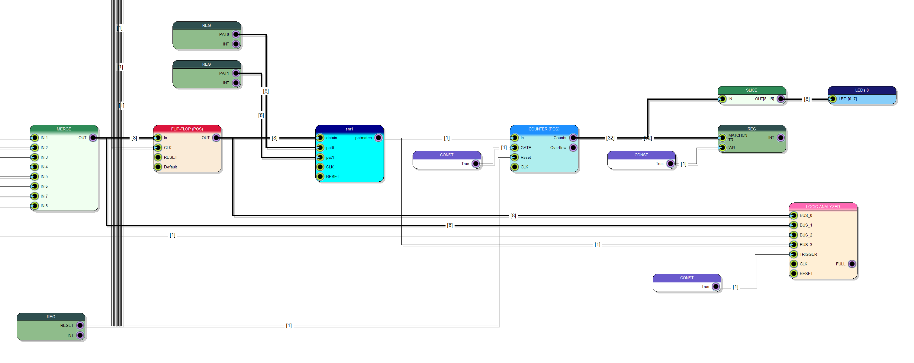
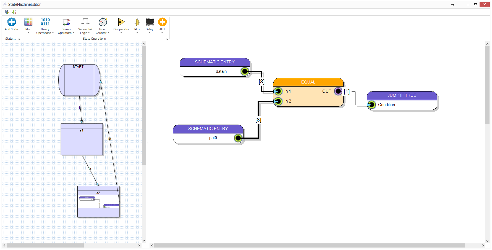
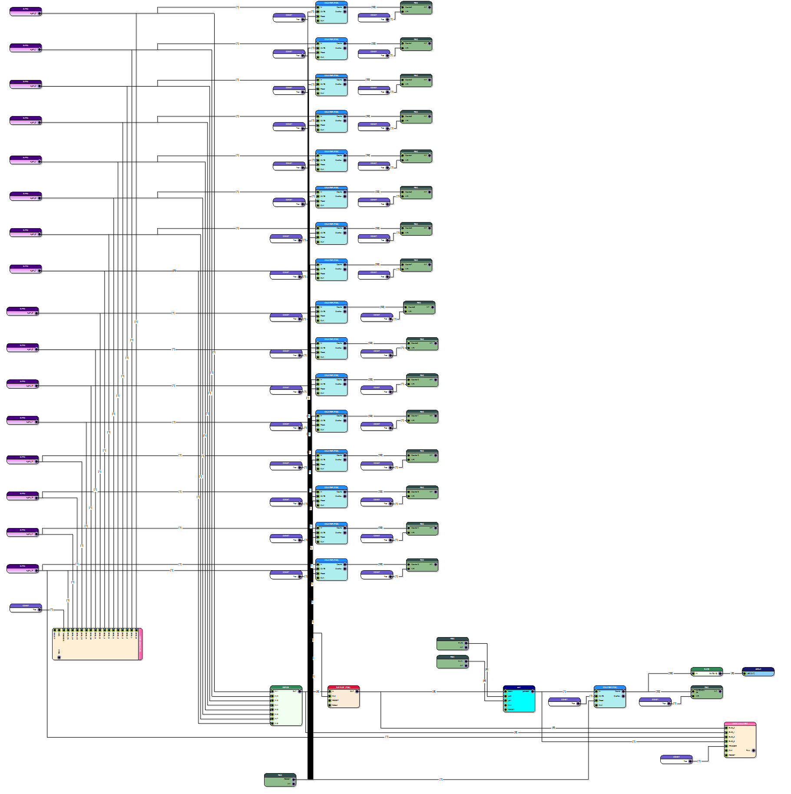

MULTICHANNEL SCALER AND PATTER MATCHING TRIGGER LOGIC¶
http://www.sci-compiler.com/example-sci-8.html
CAEN V2495 is a powerful programmable digital system designed to manage about 300 I/O signal in order to implement complex logic function, counters and triggers. In this example we will use the V2495 board to generate a pattern starting from the content of a file; the pattern generator is then used to stimulate a series of counters and a pattern matching state machine that can be programmed by USB, VME or Ethernet in order to recognize a two word pattern. All counters can be read out or resetted from USB, VME or Ethernet. When the pattern is recognized a Pattern Matching (PM) counter is increased. The PM counter can be read out by the comunication bus and heights of its bits (15:8) are shown on the 8 user leds. In order to readout and control counters or set the pattern in this example we will not use any custom software: SCICompiler has inside a tool called Resource Explorer. This tool enumerate all the pheripheral connected to the local bus of the V2495 device and list all available register and devices. In the firmware are inserted two logic analyzer: the first connected to all inputs (16 channels of A connector) and the second connected to the input and output of the patter matching state machine, in order to monitor the numeric value present on the bus.
PATTERN GENERATOR¶
SCICompiler has different embedded signal generator. It is for example possible to generate exponential signals to test energy processing blocks, generate digital waveform or import file in binary, heaxadecimal or decimal, format in order to generate a periodic sequence. The Patter Generator can be configure in order to reproduce the sequence with a configurable speed. The Pattern reproduction can be started automatically or upon the transition of a start signal.
LOGIC ANALYZER¶
SCICompiler includes a powerful Logic Analyzer that can be used to remote monitor the input signal and the internal interconnection of the design. The Logic Analyzer can be used both douring the design phase to debug the processing core both during normal operation to control the status of I/O even from a remote desktop. If you are not sure to have connect all cables correctly now you can avoid to enter in the experimental area and you can just add a debug probe to a pin and se if it toggle. The Logic Analyzer can be triggered, internally (upon the transition of one of the input), externally (upon the trasition of a dedicated trigger input), or by software. Signal in the Logic Analyzer can be grouped into bus. More then one Logic Analyzer can be added to the same design. The resource exporer software is able to enumarate the variuos logic analyzers and implements a GUI to interact with them and show the waveforms. A DLL library (open source) is also available to integrate the Logic Analyzer GUI in a user application. Logic Analyzer data could also be dumped by library function using any programming language that support interaction with dynamic libraries (in Windows, Linux and MacOS) like C/CPP, Matlab, ROOT, Labview
MEMORY MAPPED REGISTER¶
User Interaction by USB/VME/Ethernet bus is one of the most important feature of SCICompiler In the design of a processing system the implementation of a secure and fast communication protocol is one of the most time spending task. SCICompiler implements in its core all the necessary circuit to map Registers and Memory Buffer in a 16 bit for V2495 and 32 bit for DT5550 memory space direct addressable from a remote PC. All drivers and libraries for Windows and Linux are automatically generate by SCICompiler User tasks are limited to define the registers and connect them to internal signal of the design Register can be seen like an endpoint that can be written or read from the control PC. FIFO (List moduele or Image module) are more similar to a pipe. What is written inside disappear and is transported on a memory buffer on the PC. Spectrum memory can be seen as an external memory area that the computer can read/write specifying the address
COUNTERS¶
Counter modules are direct connected to the digital input of the board. The increase by one every time they are triggered by a transition (HL, LH or BOTH) of the input signals. The 32 bit counter outputs are direct connected to the Memory Mapped registers those are periodically read out by the controlling PC
PATTERN MATCHING¶
Heigh of the 16 input signal is merged in a bus in order to be processed by a pattern matching state machine. A validation signal (one of the 16 inputs) is used to capture by a rising edge flip flop the 8 bit sub-bus. The output of the FF is then passed as input of the pattern matching state machine. The state machine is also connected to two registers (PAT0, PAT1) programmed by the PC with the two stages pattern. Each time the pattern is recognized a pulse increment a counter. The counter can be read out by a PC or by the V2495 user leds.
STATE MACHINE GENERATOR¶
SCICompiler include a complex state machine generator. The state machine allows the execution of sequential operations in a fully parallel context like inside FPGAs and ASIC. The state machine editor windows is divided in two part. On the left the user design the state diagram with the connections between different states. On the right it is possible to edit:
The actions perform by the different states
The conditions to exit from a state
The state actions can be very simple (like set output state) or much more complex like deserialize incoming data. Even the link exit condition can be extremely siple, like wait the transition of an input or more complex like counts the transitions of one or more inputs respecting a maxiumum programmable timeout.
FIRMWARE REVIEW¶
The block diagram below shows the full firmware implemented inside the V2495.
